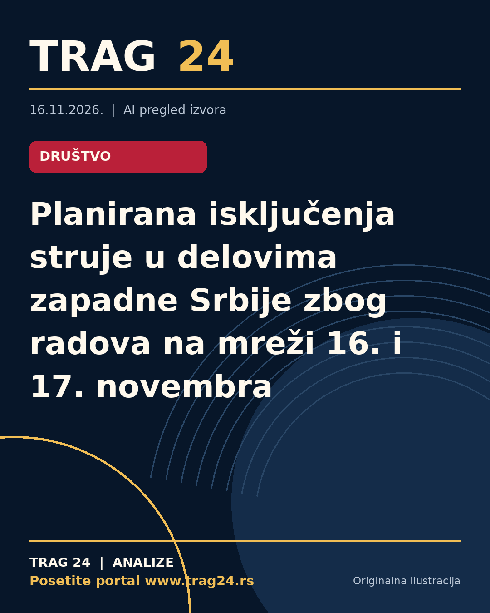

Planirana isključenja struje u delovima zapadne Srbije zbog radova na mreži 16. i 17. novembra

ŠTA SE DOGODILO
Delovi zapadne Srbije, uključujući gradove Užice, Šabac, Loznicu i okolna sela, biće isključeni sa električne energije 16. i 17. novembra zbog planiranih radova na elektrodistributivnoj mreži.
HRONOLOGIJA
Dana 16. novembra, struja će biti isključena u Užicu od 11 do 15 časova, u Šapcu i Vladimircima od 8 do 17 časova, u selima Komirić i Belotić kod Osečine u istom terminu, kao i u delu Bogiša kod Brusa od 8:30 do 14 časova. Sutradan, 17. novembra, isključenja su planirana u Užicu od 8:30 do 15 časova, u više delova Šapca i njegove okoline od 9 do 15 časova, u Loznici i okolnim selima od 8 do 17 časova, te u Malom Zvorniku (sela Donja Borina i Brasina) od 8 do 16 časova i u Krupnju od 9 do 14 časova.
ŠTA NAVODE IZVORI
Iz Elektrodistribucije Srbije upozoravaju da precizne lokacije isključenja, odnosno tačne ulice i sela, mogu se pronaći na njihovom sajtu, koji se redovno ažurira. Takođe, termini isključenja struje mogu biti promenjeni, u zavisnosti od potreba radova i drugih tehničkih razloga. Oba izvora, Insajder i Nova.rs, prenose iste detalje o terminima i lokacijama isključenja, a Novosti potvrđuju iste informacije.
ŠTA JE POTVRĐENO
Potvrđeno je da je razlog za planirana isključenja struje obavljanje radova na mreži u navedenim područjima zapadne Srbije i da će ti radovi trajati dva dana. Takođe, lista gradova i sela obuhvaćenih planiranim prekidima, kao i okvirni vremenski intervali isključenja su usklađeni u sva tri izvora.
ŠTA NIJE POTVRĐENO
Nije precizirano zbog kojih tačno radova na mreži je došlo do ovih planiranih isključenja, niti koliko će trajati sam proces radova po lokaciji unutar planiranih termina. Takođe, nije potvrđeno da li će doći do dodatnih ili vanrednih isključenja izvan navedenih termina.
ŠTA OSTАJE OTVORENO: Ostaje otvoreno da li će planirani radovi biti izvedeni prema predviđenom rasporedu ili će doći do promena u terminima isključenja. Takođe, precizne ulice i dodatna mesta mogu biti dopunjavani ili menjani na sajtu Elektrodistribucije Srbije, što treba pratiti radi tačnih informacija tokom narednih dana.
Izvori
- https://nova.rs/vesti/drustvo/vise-mesta-u-zapadnoj-srbiji-danas-i-sutra-bez-struje-zbog-radova-na-mrezi/
- https://insajder.net/prenosimo/iskljucenja-struje-u-vise-mesta-u-zapadnoj-srbiji-zbog-radova-na-mrezi
- https://www.novosti.rs/srbija/vesti/1671518/radovi-mrezi-danas-iskljucenja-struje-vise-mesta-srbiji
Ova analiza je pripremljena uz pomoć veštačke inteligencije na osnovu javno dostupnih izvora. Navodi izvora nisu nužno nezavisno potvrđeni.